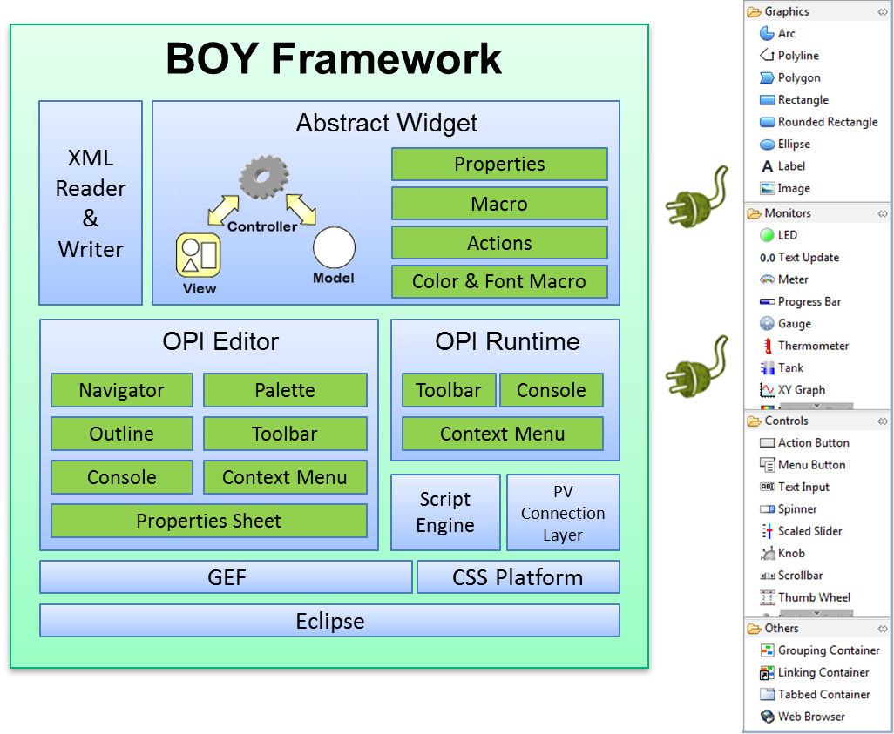
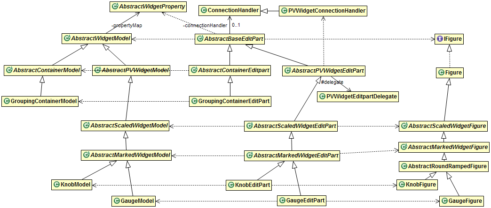
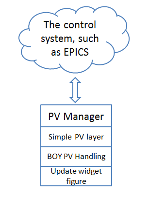
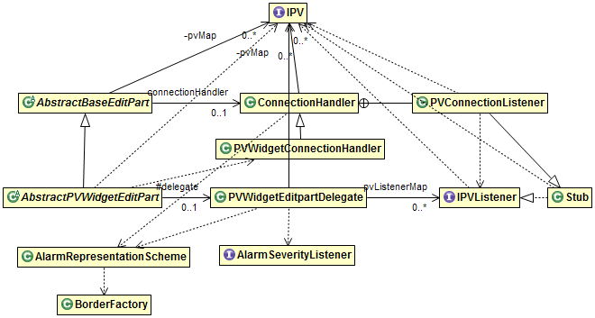
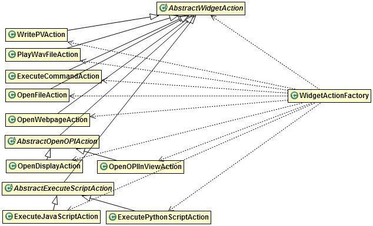
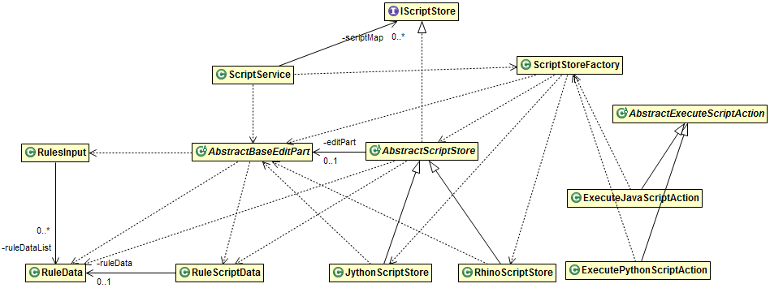
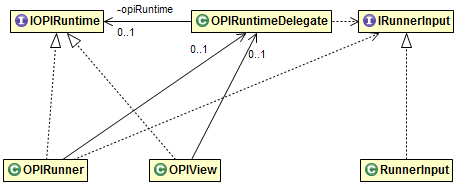
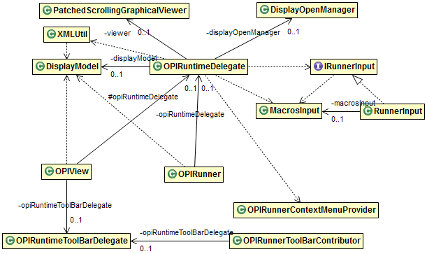

Table of content
Back to TopBOY is not only an application but also a framework that can be extended with widgets and data sources. The framework provided implementations for all the common functionalities, such as XML file reader and writer, PV connection handling, abstract widgets, properties, OPI Runtime and OPI Editor. The framework can be extended using the extension points provided by the framework.

BOY Plugins are listed as below:
Core plugins:
org.csstudio.opibuilder: the core plugin org.csstudio.opibuilder.rcp: the RCP fragment of org.csstudio.opibuilder. Not needed for WebOPI.org.csstudio.opibuilder.widgets: the core widgets plugin org.csstudio.opibuilder.editor: the editor plugin. Not needed for WebOPI or OPI runtime only product.org.csstudio.opibuilder.widgets.rcp: the RCP fragment of org.csstudio.opibuilder.widgets. Not needed for WebOPI.Extra plugins:
org.csstudio.opibuilder.widgets.symbol: symbol widgets provided by ITERorg.csstudio.opibuilder.widgets.extra: Extra widgets provided by BNLorg.csstudio.opibuilder.examples: BOY Examplesorg.csstudio.opibuilder.imagelib: Image library that can be used for BOY OPI.org.csstudio.opibuilder.test: test fragment for org.csstudio.opibuilder. Not needed for building final product.org.csstudio.opibuilder.performanceTest: Performance test resources. Not needed for building final product.org.csstudio.opibuilder.converter: EDM to BOY converterorg.csstudio.opibuilder.adl2boy: MEDM to BOY converterFeature: org.csstudio.opibuilder.feature
The extension points provided by BOY are listed as below:
org.csstudio.opibuilder.widget: Widgets can be added to BOY using this extension pointorg.csstudio.opibuilder.graphicalFeedbackFactory: Customized graphical feedback can be added to a specific widget
using this extension point. For example, a gauge widget should always keep the same width and height.org.csstudio.simplepv.pvfactory: provides different PV implementations by using this extension point.
Currently it provides utility_pv and pv_manager implementations. Both Utility PV and PV Manager have
their own extension points to allow different data sources. Utility PV has been deprecated, but it is still
useful to switch back to it if there is a bug in PV Manager that has not been resolved.
The internal structure of BOY is described by class diagrams as below. In these diagrams, unnecessary classes or relationships have been removed so it only show the important relationships.
All BOY widgets should follow Model-View-Controller (MVC) pattern. In BOY, the "View" is an instance of draw2D IFigure.
The figure can be totally independent with BOY. For example, some of BOY widgets' figure such as gauge, knob and XY Graph have been
contributed to Eclipse Nebula Visualization project.
The "Controller" is an instance of AbsctractBaseEditPart.
Each widget must have a Model, EditPart and Figure class as shown in the widgets class diagram below.

The below picture describes how data from your control system flow to the widget. PV Manager is the library that talks to your control system. Simple PV Layer is a layer that provides a simpler and abstract interface to talk to PV Manager. BOY only needs to talk the Simple PV interface.

BOY has the general PV handling code in PVWidgetEditpartDelegate and ConnectionHandler. For example, it will set
the pv_value property of the widget when PV's value changed, then the specific widget implementation will
listen on pv_value property to update the widget. The general PV handling code also changes widget figure's border and enable state
when pv's connection, alarm or write permission states changed.

All widget properties must subclass AbstractWidgetProperty. Each property should
define how it should be persisted to XML and read from XML. If the property should be editable in property sheet,
it should also define its corresponding PropertyDescriptor. All the basic properties defined in
BOY framework are shown as below. User may define his own property type by subclassing AbstractWidgetProperty.
Widget Actions are the actions available on Widget's Actions property. All Widget Actions should
subclass AbstractWidgetAction and be created from WidgetActionFactory.

Scripts and Rules can be attached to every widget, so the attaching is handled in AbstractBaseEditPart.
It provides an AbstractScriptStore, so it allows to be extended to any JVM scripting languages.
Currently it provides Jython support (JythonScriptStore) and JavaScript support (RhinoScriptStore).
Rules will be translated to JavaScript text and use the same scripting mechanism to execute it.

OPI runtime can be created on any SWT composite. Currently, it provides an Editor implementation (OPIRunner)
and a View implementation (OPIView).
Most of OPI Runtime functions are implemented in OPIRuntimeDelegate, so a new OPI Runtime
can be easily created by using this delegate.

OPIRuntimeDelegate hooks up all OPI Runtime related features such as context menus, toolbar, XML reading,
Display navigation, macros management etc. Some context menu actions are added using objectContribution
extension point, so they are not shown here.

OPIEditor hooks up all OPI Editor related features such as Actions, Context Menus, Toolbar,
Outline pages, context help etc.
Some context menu actions are added using objectContribution
extension point, so they are not shown here.